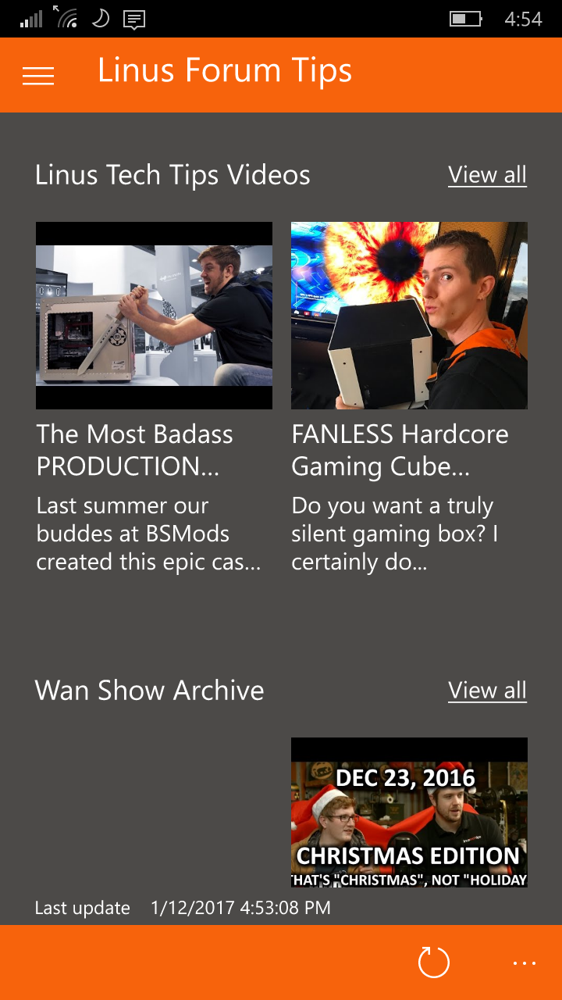
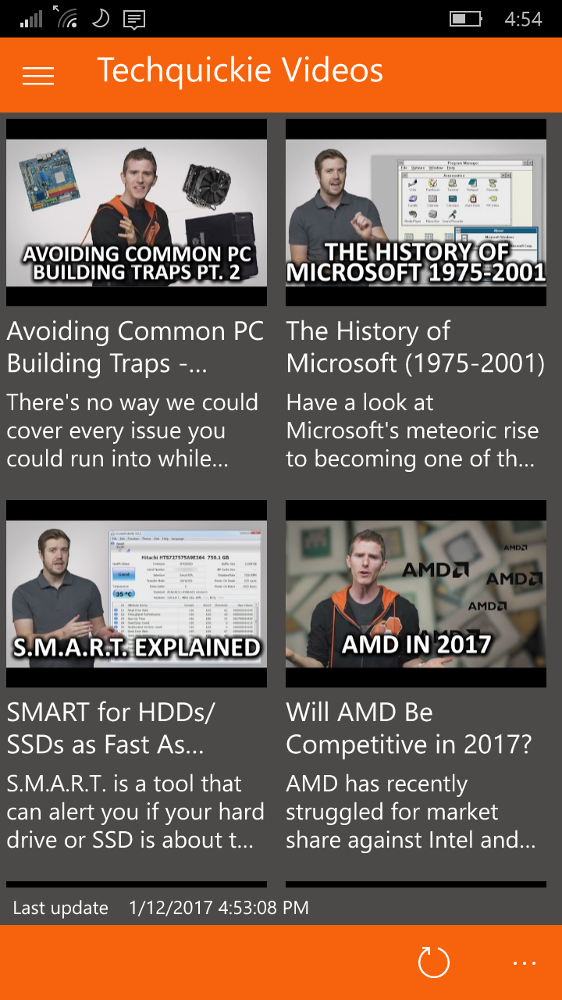
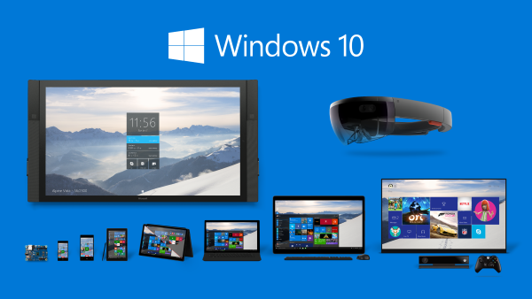

Super. Fast.
An amazingly fast app for viewing Linus Media Group content and interacting with the Linus Tech Tips *3 forums on the go.
It's been designed with performance in mind and optimized for a smooth experience even on low spec devices *1.

Content. Consumption.
Linus Forum Tips has access to all kinds of videos from regular LTT videos all the way to quick and informative videos about specific topics within technology.
Videos are added daily thanks to the use of some pretty awesome web technology and the amazing team at Linus Media Group. *2

Epic. Scale.
Linus Forum Tips is available on a variety of devices from "Internet Of Things" devices all the way to Phones, Game Consoles and High Performance PCs.
See the app comparison table for more details.
Notes:
*1 - App requirements vary by platform. For more information, view the app comparison table.
*2 - The Linus Forum Tips team are no in way affiliated with LinusMediaGroup Inc.
*3 - Linus Tech Tips is a trademark of LinusMediaGroup Inc in Canada and other countries.
*4 - Linus Forum Tips, the Linus Forum Tips logo and App are copyrights of AluminiumTech and the Linus Forum Tips team.